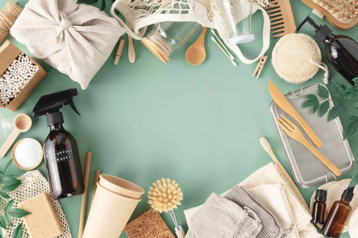

★★★★★
"Cambiar las esponjas sintéticas por las de luffa y los envases de vidrio transformó mi cocina por completo. El empaque llegó impecable y sin un solo pedazo de plástico."

EcoMarket nació de una convicción simple: cada decisión de compra diaria puede ser un voto a favor del planeta. Comenzamos como un pequeño colectivo en Bucaramanga reuniendo a artesanos y productores locales comprometidos con la reducción de residuos.
Hoy ofrecemos alternativas ecológicas comprobadas que no sacrifican calidad ni diseño, facilitando a miles de hogares la transición hacia un estilo de vida más consciente y libre de plásticos de un solo uso.
Todos nuestros productos y embalajes son biodegradables, reutilizables o compostables.
Garantizamos tratos directos y pagos equitativos para campesinos, artesanos y diseñadores.
Fomentamos el uso de materiales recuperados, reciclables y empaques retornables.
Ninguno de nuestros productos de higiene o cosmética ha sido probado en animales.
"Cambiar las esponjas sintéticas por las de luffa y los envases de vidrio transformó mi cocina por completo. El empaque llegó impecable y sin un solo pedazo de plástico."
"El champú sólido y el cepillo de bambú superaron mis expectativas. Duran muchísimo y dejan el cabello perfecto. Totalmente recomendado si buscas reducir tu basura."
"Me encanta saber que detrás de cada producto hay artesanos locales recibiendo un pago justo. La botella térmica y las bolsas de tela me acompañan a todas partes."